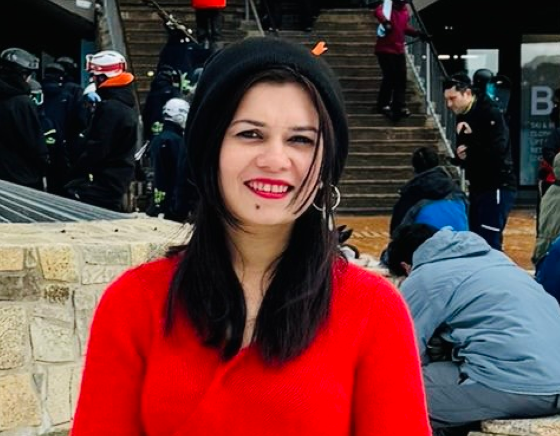

Mahin Reza

Product Designer
- Phone: 0430 523 239
- Email: mahin_reza@hotmail.com
- Location: Melbourne, Australia
Linkedin | Design Portfolio
Summary
As a Product Designer specializing in UI design and design systems, I've been perfecting my craft since 2020.
Recently, I’ve expanded my skills into web development, learning to code to bring my designs to
life with a seamless blend of creativity and functionality.
Work Experience
Freelancer | Product Designer
Nov 2023 - Present, Melbourne
- Designed a seamless e-commerce website for business customers.
- Created a consistent design system with UI components and style guides.
- Conducted user research and testing to guide design choices.
- Developed high and low-fidelity mock-ups.
- Ensured accessibility with W3C WCAG 2 AA standards.
- Collaborated with teams to meet project goals.
- Refined designs based on user feedback.
Jim's Group | Product Designer
Apr 2023 - Oct 2023, Melbourne
- Led user research and design for a B2B/B2C connection product.
- Worked with the CEO, CMO, and developers to align design with business goals.
- Created wireframes, prototypes, and high-fidelity designs using Adobe XD.
Creativemass | UX and UI Designer
Apr 2023 - Oct 2023, Melbourne
- Designed UX/UI for WealthConnect DIGITAL, a financial management platform.
- Improved web and mobile interfaces for better user engagement.
- Collaborated with teams in an agile environment.
- Created and tested user flows, wireframes, and prototypes.
- Maintained design systems with templates and style guides.
Freelancer | UX and UI Designer
Nov 2020 - Oct 2021, Melbourne
- Managed freelance projects, engaging with clients to provide tailored UX solutions
- Conducted user research, created personas, and performed usability testing
- Developed wireframes and prototypes using Figma and AdobeXD
- Created and tested user flows, wireframes, and prototypes.
- Conducted usability tests for web and mobile designs.
Harness Projects | UX Designer
Feb 2020 - Oct 2020, Melbourne
- Collaborated on UX projects with Smiling Mind, IKEA, The Swag, and Communiteer
- Executed user research, developed interactive prototypes, and conducted usability tests to enhance product features.
Educations
Google | UX Designer Certificate
Jan 2021 - Jun 2021, Melbourne
Harness Projects | UX Designer Certificate
Feb 2020 - Oct 2020, Melbourne
Deakin University | MPA
Feb 2012 - Sep 2013, Melbourne
Skills
- Product Design:⭐️⭐️⭐️⭐️⭐️
- Figma: ⭐️⭐️⭐️⭐️⭐️
- HTML:⭐️⭐️⭐️⭐️⭐️
Awards
Best Student | MPA | Deakin University
Dec 2013, Melbourne
Hobbies
- Browsing new UX tools and trends
- Learning web development
- Listening to music
- Drawing art
Contact Me
- Phone: 0430 523 239
- Email: mahin_reza@hotmail.com
- Location: Melbourne, Australia
Linkedin | Design Portfolio